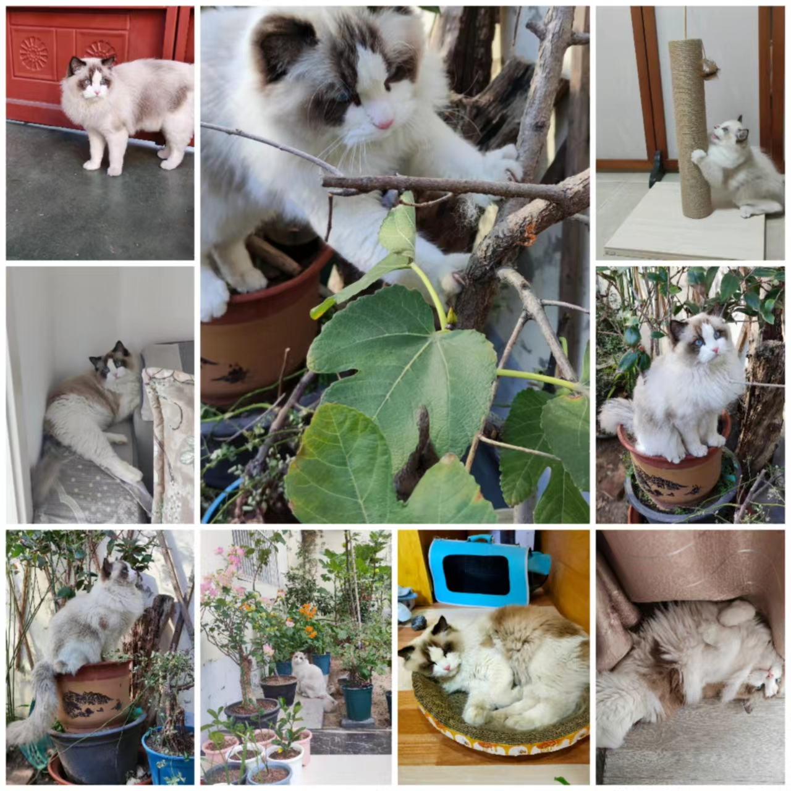

Yunjie Tian · 田运杰
Postdoctoral Associate, University at Buffalo
Computer Vision
Multimodal Learning
Representation Learning
Real‑time Detection
I will be joining TikTok as a Senior Research Scientist. I am currently working with Prof. David Doermann at UB. I received my Ph.D. from LAMP, UCAS in 2024, advised by Prof. Qixiang Ye. B.E. from Jilin University (2019).

Research Focus
My research spans vision foundation models, multimodal LLMs, and efficient real‑time perception. I design architectures and training strategies that make models faster, more robust, and more interpretable for long videos and dense scenes.
Selected Publications
Contact
Room 301B, Davis Hall
Department of Computer Science and Engineering
University at Buffalo, SUNY
Buffalo, NY 14260, USA
Email: tianyunjie96@gmail.com